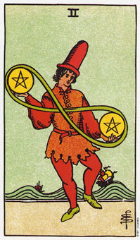

【关键词】 波动 弹性 平衡 娱乐
一个凭似马戏团小丑般的男人，正在耍弄着两枚金币，金币外面绕着8字形的带子。他后面的海面起伏剧烈，船只在浪尖上行使。单从男人杂耍的星币和起伏的海面来看，星币而表现的是一种动荡的生活状态。小处言之，是整个人生的潮起潮落。人的一生要应付许多状况，从画面上看，男人正在掂两枚金币的重量，似在寻求一种应对方法。保持弹性，是星币给人们的一个启示，面对人生的风浪，要像图中的男人那样从容面对。
推测：要求推测者面对各种事物，要八面玲珑长袖善舞，不要死守某个思维定势。在财运的推测中，星币二预示着收支平衡。如果你近来情绪低落，它预示你应想得开，投入的娱乐一翻。
星币二暗示和金钱有关的决定。
星币二画一个杂耍艺人。他正在耍弄他的金钱、体力或才华，以便在那些他必须去做，以及他所想做的事之间找到一个平衡点。他也可能是在耍弄一项事业和个人的兴趣。
绕着两颗星币的环，形成一个无限大的符号，暗示钱是能量的一种形式，会不断的运转着。
波浪上面的船只象征生命的浪潮。当属于你的浪进来时，金钱和机会就会很轻易的流向你;而当你个人的潮退了，这些物质上的机会就没有那么明显了。
这个杂耍艺人的注意力释放在下面的星币，或即将要被花掉的钱。
他身着桔红色的衣服，而两脚则不停的动着。这证实了他赚取他的星币和花掉它们所付出的体力。
2描述着权衡各种机会的轻重，而这次它们是属于身体或物质的层面上。这象征着介于两个选择之间的决定。你有没有办法现在就抉择，或是再等一会儿会不会比较好呢?
大体上的意义
星币二可能是在描述，做出两难之间的抉择，譬如说玩弄你的时间或金钱、或是先付这笔帐拖延那笔帐。它也可以代表一个有关金钱的决定，或仅只是规划你的时间和精力，以便有能力做那些你想做的事情。
在事业的分析方面，2暗示在两个可能的工作，或是两个生涯方向当中做出决定。
正位含义：
1.生活中麻烦评出，运气差到极点。
2.就的烦恼来了，新的烦恼又来，逼着你学会在逆境中生活。
3.新的计划无法实现。
4.生活混乱如麻，没头绪。
逆位含义：
1.能投入的娱乐，能真确处理工作和生活的关系。
2.用钱过渡，越出计划。
3.表面快乐，内心痛苦。
两性关系上的意义
在两性关系的分析当中，星币二代表权衡两性关系的机会，或决定一段基于金钱考两上的两性关系。
例如，最近的一次分析当中，有个女人想我解释她在两个男人当中做出的最后决定，是取决与男人能提供她多少钱财。她选了比较富有的男人，而不做任何感情上的考量，然后又抱怨他在情感上没有办法满足她，而且又太忙了，日以继夜的工作着。
星币二可表示考虑进入两性关系中的一个阶段，这个阶段会用到很多钱。或许你正在考虑买栋房子，或决定组织一个家庭，而你正在衡量这些费用。
倒立的星币二
当星币二出现倒立时，表示对于必须放弃什么你已经越来越清楚了，因为你必须去实现某个通路或方案。
2的倒立可能暗示在两难之间做出选择，而没有两全其美的办法了。它可能意味着你投入太多事情或太分散你的钱财，以至一事无成;或者是因操之过急而失败。低潮总是跟随着高潮而来，而现在正是你丢掉那些贵重而用不上的东西的时候了。